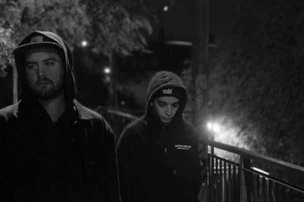

Cono y Ket

Arriban de la Patgonia Argntina (Puerto Madryn, chubut) a la ciudad de buenos aires con el objetivo de crecer en la capital donde comienzana orgnizr pequeños eventos y poder con ellos tener la oportunidad de empezar a tocar para un myo publico, al ver el resultado positivo deciden ponerle nombre y forma a su actual ciclo de techno llamado paranoid. gracias a ello lograron llevar su sonido a los mejores clubs de la ciudad como Crobar y under club. Tambien recorriendo distintas provincias de su pais. su estilo musical se basa en el groove hardtech, donde buscan vincular distintos sonidos intensos, grooveros y sorprender la pista descontracturando la linea usando cajas de ritmos, sintetizadores y pedales manteniendo un ritmo ascendente sobre ella.
